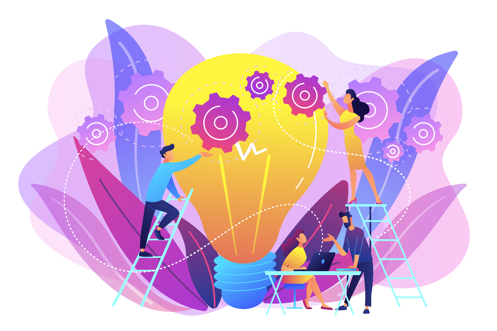
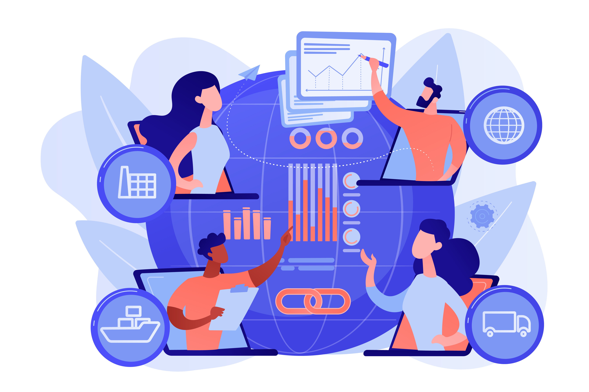

Historia
Scrum aparece alrededor del año 1986, y fue creado por Ikujiro Nonaka e Hirotaka Takeuchi, a partir de un estudio que realizaron a distintas empresas que estaban viendo un nuevo enfoque de trabajo...

Eventos
Scrum cuenta con 5 eventos o ceremonias que permiten llevar un registro y analizar el proceso de principio a fin...

Reuniones
El Sprint Planning es una reunión que se realiza al comienzo de cada Sprint donde participa el equipo Scrum al completo; sirve para inspeccionar el Backlog...